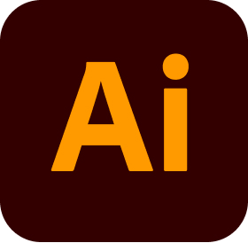
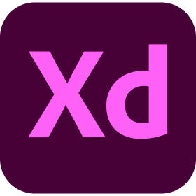
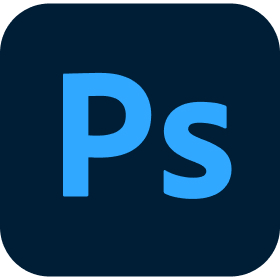
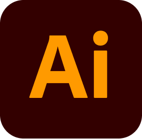
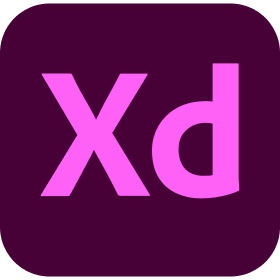
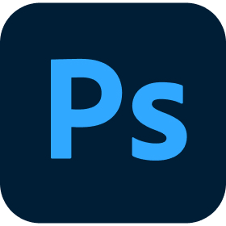

I'm Adithyan
A passionate UI/UX designer with a keen eye for detail and a love for creating intuitive, user-friendly digital experiences.
About me
Hi there! I'm Adithyan, a passionate UI/UX designer dedicated to crafting intuitive, user-friendly, and visually compelling digital experiences. With a keen eye for detail and a deep understanding of user-centered design principles, I strive to create products that not only look great but also solve real-world problems. My journey as a designer is fueled by creativity and curiosity. I enjoy turning complex ideas into seamless interfaces that resonate with users and help businesses achieve their goals. From ideation to high-fidelity prototyping, I believe in a collaborative design process that puts the user first. Let's create impactful digital experiences together!
Education
BSc Physics
NSS College Nemmara
Science
KCPHSS Kavassery
Experience
Course Certified
Techmindz, Infopark
Freelancer
+1 year experience
Tools I Use
 





Languages I know
Malayalam, English, Tamil
Projects
CycleNow
CycleNow is a thoughtfully designed cycle rental app that prioritizes user convenience and promotes sustainable urban commuting. As a UI/UX designer, my focus was on creating a seamless and intuitive user journey, ensuring that users can easily locate nearby cycles, check their availability in real time, and complete rentals with minimal effort. The app’s clean interface, combined with a simple yet effective design, caters to a diverse audience, including daily commuters, tourists, and fitness enthusiasts. By incorporating eco-friendly initiatives and user-centered features like QR-based unlocking and hassle-free payment options, CycleNow not only enhances the rental experience but also encourages greener and healthier transportation habits.
Zindagi Matrimony
Zindagi Matrimony is a user-focused matrimonial app designed to simplify the process of finding a life partner by combining intuitive design with advanced matchmaking features. As a UI/UX designer, my goal was to create an inclusive and engaging platform that caters to diverse cultural and personal preferences. The app offers a seamless experience with personalized profile creation, smart search filters, and secure communication tools. By prioritizing usability and trust, Zindagi Matrimony empowers users to connect meaningfully while ensuring a smooth journey toward finding their ideal partner.
Techmindz
TechMindz is an educational platform crafted to bridge the gap between learners and modern technological skills. As a UI/UX designer, my focus was on creating a user-friendly and engaging experience that caters to students, professionals, and tech enthusiasts alike. The website features a structured layout with intuitive navigation, making it easy for users to explore courses, access resources, and track their progress. By combining interactive learning tools, responsive design, and a visually appealing interface, TechMindz empowers users to advance their knowledge and stay ahead in the ever-evolving tech landscape.
Contact
Phone: 7293057918
Email: adithyanadhi03@gmail.com
LinkedIn: adithyan-k-591016294